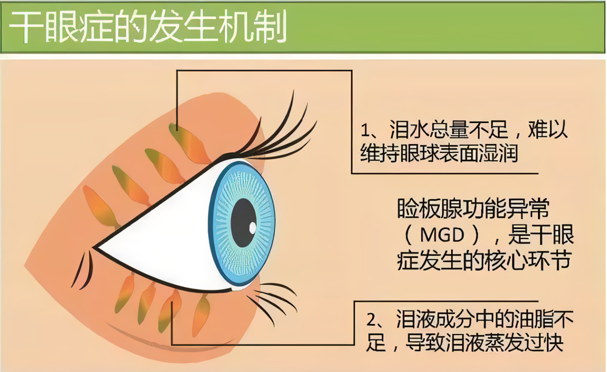
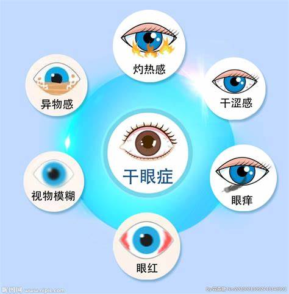

干眼症
危险程度
中风险
就医建议
症状持续建议就医
最佳就医时间
症状持续两周以上
什么是干眼症？
干眼症是一种多因素导致的泪膜稳定性下降和眼表微环境改变的疾病，会引起眼部不适和视觉功能障碍。它是现代社会常见的眼表疾病，与电子设备使用、环境因素和年龄等多种因素相关。
关键特征：
- 泪液分泌不足或蒸发过快
- 眼部持续性不适感
- 视觉波动
- 眼表损伤
干眼症分类
水液缺乏型
泪腺功能减退导致泪液分泌不足
蒸发过强型
泪液蒸发加快导致眼表干燥
混合型
同时存在泪液缺乏和蒸发过强
用眼过度型
长期使用电子设备导致
干眼症分类
水液缺乏型
泪腺功能减退，泪液分泌不足
蒸发过强型
泪液蒸发加快，眼表干燥
混合型
同时存在泪液缺乏和蒸发过强
用眼过度型
长期使用电子设备导致
图示说明：
图1：干眼症发病机制示意图

上图展示了干眼症的发病机制
图2：正常眼睛与干眼症对比图

上图展示了正常眼睛与干眼症的对比
主要症状
主观症状
干涩感
眼睛干燥、发痒
异物感
有沙子在眼睛的感觉
视疲劳
用眼疲劳加重
畏光
对光线敏感
客观体征
泪膜破裂时间缩短
BUT值降低
角膜染色阳性
可见点状着色
泪液分泌减少
Schirmer试验异常
结膜充血
眼球表面发红
治疗方法
药物治疗
- 人工泪液
- 眼部润滑剂
- 抗炎药物
- 促进泪液分泌药物
物理治疗
- 泪小点栓塞
- 热敷按摩
- 眼部护理
环境调节
- 增加环境湿度
- 避免空调直吹
- 使用加湿器